Abstract
Detecting changes between images is a fundamental problem in computer vision with broad applications in situational awareness, infrastructure assessment, environment monitoring, and industrial automation. Existing supervised models are typically limited to detecting specific types of changes, necessitating retraining for new tasks. To address these limitations with a single approach, we propose a novel change detection method that is the first to utilize unaligned images and textual prompts to output a binary segmentation of changes relevant to user-provided text. Our architecture not only enables flexible detection across diverse change detection use cases, but also yields state-of-the art performance on established benchmarks. Additionally, we release an accompanying dataset comprising of 100,311 pairs of images with text prompts and the corresponding change detection labels. We demonstrate the effectiveness of our method both quantitatively and qualitatively on datasets with a wide variety of viewpoints in indoor, outdoor, street level, synthetic, and satellite images.
 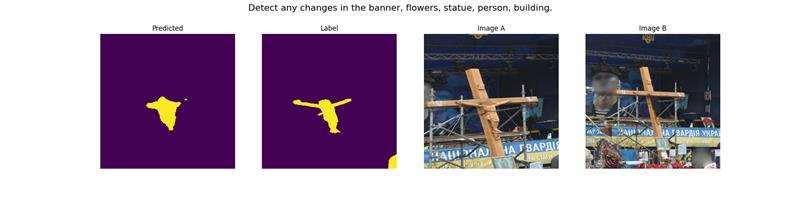
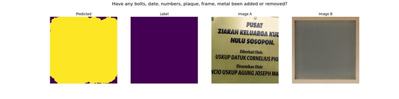
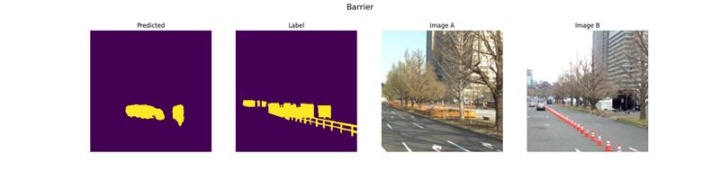
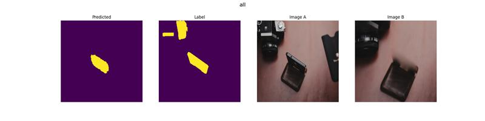
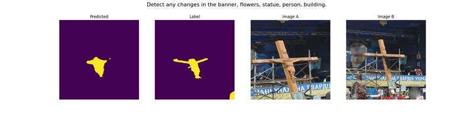
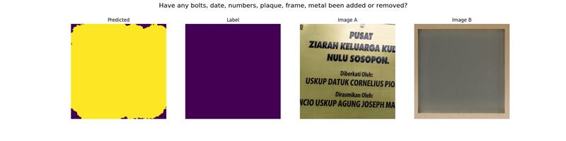
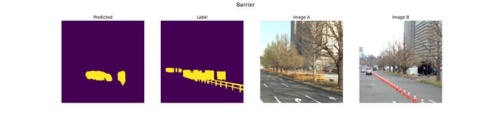
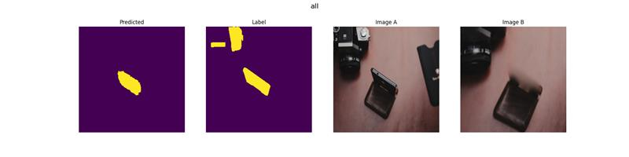
 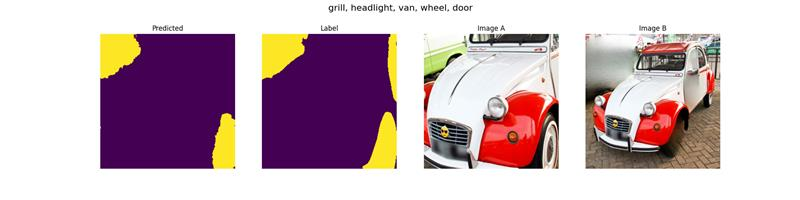
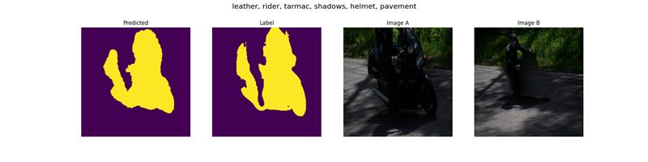
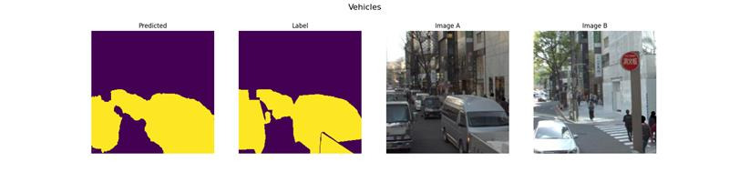
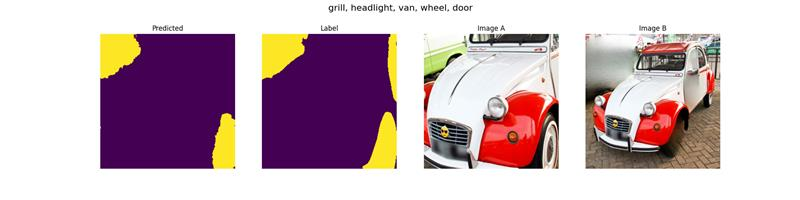
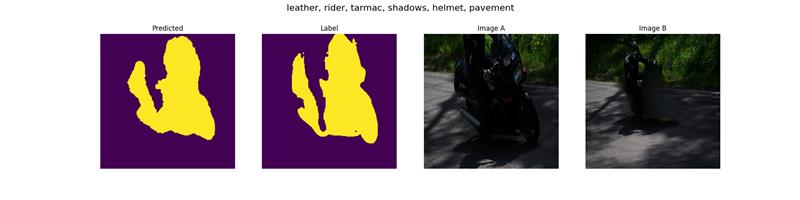
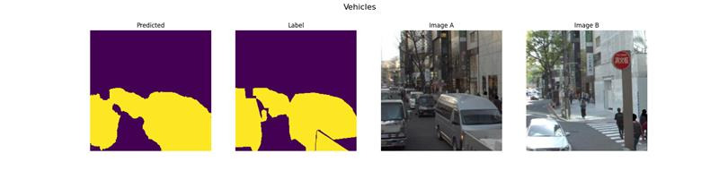
Evaluation
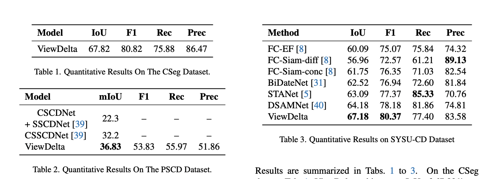BibTeX
@article{varghese2024viewdelta,
title={ViewDelta: Text-Prompted Change Detection in Unaligned Images},
author={Varghese, Subin and Gao, Joshua and Hoskere, Vedhus},
journal={arXiv preprint arXiv:2412.07612},
year={2024}
}